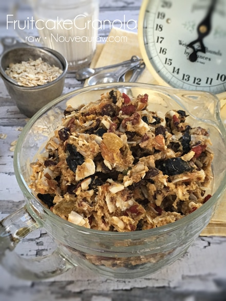

Fruitcake Granola

~ raw, vegan, gluten-free ~
OK, so this isn’t your typical fruitcake, not at all like great, great, great, great grandma use to make…hmmm, I wonder if that thing is still around here somewhere. Haha Whether or not you like fruitcakes, their history on them is rather interesting…
- In the Bahamas, not only is the fruitcake drenched with rum, but the ingredients are as well. All of the candied fruit, walnuts, and raisins are placed in an enclosed container and soaked with the darkest variety of rum, anywhere from 2 weeks to 3 months in advance. The cake ingredients are mixed, and once the cake has finished baking, rum is poured on it while it is still hot.
- In Canada, the fruitcake is commonly known as the Christmas Cake.
- In French, as in some other non-English speaking countries, it is simply called “Cake.”
- In Germany, The Stollen, a traditional German fruitcake usually eaten during the Christmas season, is loaf-shaped and powdered with icing sugar on the outside. It is usually made with yeast, butter, water, flour, zest, raisins, and almonds.
- In Italy, fruit cake is known as Panforte which is a chewy, dense Tuscan fruitcake dating back to 13th-century Siena.
- In the US, the typical American fruitcake is rich in dried fruit and nuts.
What to do with a fruitcake?
- The Egyptians thought so much of these cakes that they put them in tombs. They thought that fruitcake would survive the long journey to the afterlife. That concept isn’t too far-fetched.
- Crusaders knew that fruitcake could withstand a long journey. Not only did these cakes withstand long journeys, but they were also full of nutritious items like dried fruit and nuts.
- Many people claim that fruitcake gets better with age. Another fun fact is that they are perfectly edible as long as there is no mold on them. The only problem is that they sometimes dry out. If this happens, just soak them in alcohol (the drinking kind) or simple syrup to renew them.
- The people of Manitou Springs, Colorado take part in the Great Fruitcake Toss. This festival features several different fruitcake contests. People see how far they can throw or hurl this holiday treat, while others use fruitcake to make little cars for a race.
- Fruitcake will last for years without spoiling. It’s true. A fruitcake that is properly preserved with an alcohol-soaked cheesecloth that is then wrapped in plastic wrap or foil can be kept unrefrigerated for years without spoiling. In the past, before refrigerators came along, families would make fruitcakes for holidays and special occasions months in advance. As long as the cloth was pre-moistened with alcohol occasionally the cakes not only didn’t spoil, they actually tasted richer and sweeter because they had been soaking in brandy or rum for a couple of months.
Well, I can’t say that my Fruitcake Granola will last for years, but I can almost guarantee that it would make for a well-received gift that will be gone probably in less than a week!
 Ingredients:
Ingredients:
- 4 cups raw rolled, gluten-free oats, soaked
- 1 cup raw almonds, soaked
- 1 cup diced raw pecans, soaked
- 1/3 cup raw sunflower seeds, soaked
- 5 cups mixed dried fruit, re-hydrated
- 1 cup flaked unsweetened coconut
- 1 /2 cup flax seeds, ground
- 3/4 cup raw cashew or almond flour
- zest of 2 organic lemons
- 1 tsp Himalayan pink salt
- 3/4 cup pure maple syrup or equivalent
- 2 cup fresh apple juice
- 2 Tbsp vanilla extract
Preparation:
- Soak the oats, nuts, and seeds according to the link provided above.
- Once done soaking, drain and rinse the nuts and seeds, placing them in an extra-large mixing bowl.
- Drain and rinse the oats until the water starts to thin out in color.
- I typically rinse for 2 minutes under cool water. Hand squeeze out the excess water and add the bowl of nuts and seeds.
- Place all the dried fruit in a large bowl and add enough warm water to cover them. Let them soak for about 15 minutes.
- If the fruit pieces are large, cut into bite-sized pieces.
- Once done soaking, drain and place the dried fruit in the bowl with the oats, etc.
- The recipe calls for apple juice, but if you don’t have any, you can use the soak water from the dried fruits.
- Add the coconut flakes, ground flax, flour, zest of lemon, salt, sweetener, juice, and vanilla to the bowl. All ingredients should be in the bowl at this point… if not, get them in there. :) Mix well with your hand, getting everything well coated.
- Allow the batter to sit for about 15 minutes, this activates the flax meal and will help to absorb some of the extra fluid.
- Drop clusters of the batter on the teflex sheets that come with the dehydrator.
- If you don’t have those you can use parchment paper, but don’t use wax paper because the granola will stick to it.
- Dehydrate at 145 degrees (F) for 1 hour, then reduce to 115 degrees (F) and continue to dry for up to 24 hours.
- Partway through, flip the tray over onto the mesh screen, and peel off the teflex sheet.
- Continue drying until the desired dryness is reached.
- I tend to like my granola more on the chewy side than the crunchy side.
- Once done and cooled, store the granola in airtight containers. You can keep it on the countertop for walk-by munching, or it can be stored in the fridge or freezer to extend the shelf life. On the counter, it should last several weeks if it lasts that long!
The Institute of Culinary Ingredients™
- To learn more about maple syrup by clicking (here).
- What is Himalayan pink salt and does it really matter? Click (here) to read more about it.
- Are oats gluten-free? Yes, read more about that (here).
- Are oats raw? Yes, they can be found. Click (here) to learn more.
- Do I need to soak and dehydrate oats? Not required but recommended. Click (here) to see why.
- Learn how to grind your own flaxseeds for ultimate freshness and nutrition. Click (here).
Culinary Explanations:
- Why do I start the dehydrator at 145 degrees (F)? Click (here) to learn the reason behind this.
- When working with fresh ingredients, it is important to taste test as you build a recipe. Learn why (here).
- Don’t own a dehydrator? Learn how to use your oven (here). I do however truly believe that it is a worthwhile investment. Click (here) to learn what I use.
© AmieSue.com